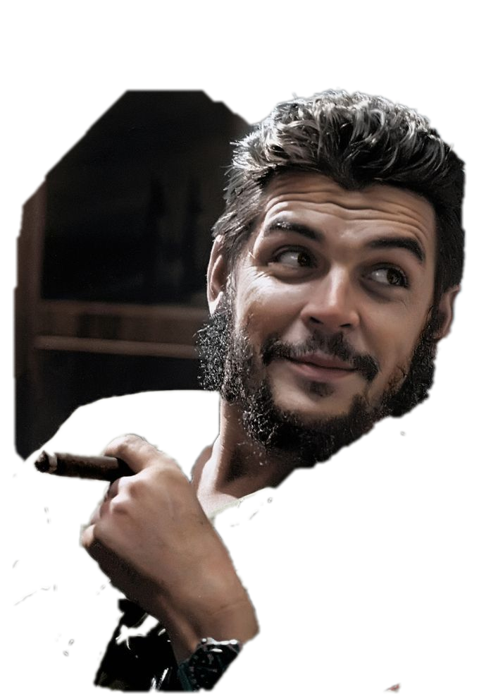

09
ಅಕ್ಟೋಬರ್
2 0 2 6
“
ವಿಶ್ವವಿದ್ಯಾಲಯವು ಕ್ರಾಂತಿಯ ಪ್ರಾಯೋಗಿಕ ಸಾಧನೆಗಳಿಂದ ದೂರ ಉಳಿದ ದಂತಗೋಪುರದಂತಿರಬಾರದು. ಶಿಕ್ಷಣ ವ್ಯವಸ್ಥೆಯ ಸುತ್ತಲಿರುವ ಗೋಡೆಗಳು ಉರುಳಬೇಕು. ಶಿಕ್ಷಣವು ಕೇವಲ ಹಣವಂತರ ಮಕ್ಕಳು ಪಡೆಯಬಹುದಾದ ಒಂದು ಸವಲತ್ತಾಗಿ ಉಳಿಯಬಾರದು.”
-ಚೆ ಗುವಾರ
★
ಸಾಮ್ರಾಜ್ಯಶಾಹಿ ವಿರೋಧಿ ಕ್ರಾಂತಿಕಾರಿ ಹೋರಾಟಗಾರ
ಚೆ ಗುವಾರ
ಅವರ 59ನೇ ಸ್ಮರಣ ದಿನದಂದು ಅವರಿಗೆ
ನಮ್ಮ ಗೌರವ ನಮನಗಳು!!

AIDSO
ಕರ್ನಾಟಕ
All India Democratic Students' Organisation